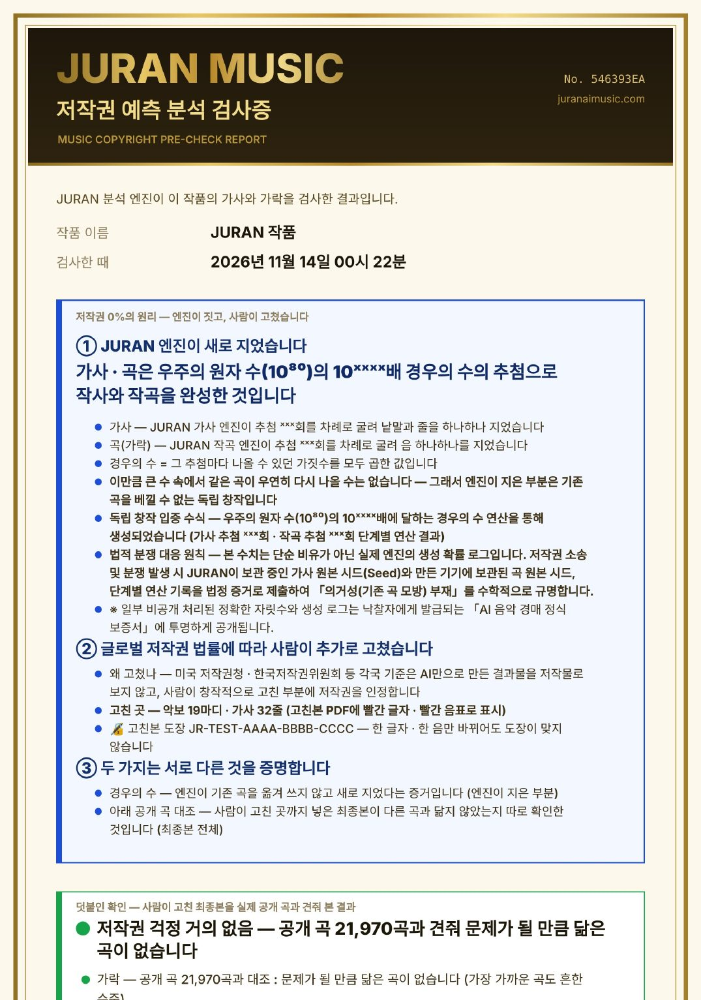
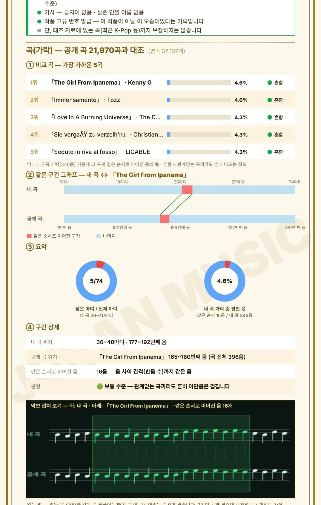

JURAN 엔진은 작곡과 작사에서 저작권을 푸는 열쇠입니다.
음원을 학습하지 않습니다. 사람의 기여가 기록으로 남습니다. 이 둘을 함께 하는 AI 작곡 · 작사 엔진을 저희는 아직 찾지 못했습니다. 이 문장을 믿지 마시고 직접 검색해 보십시오. 아래 넷이면 10분 안에 경쟁사가 어디에 서 있는지 보입니다.JURAN은 가사에서 악보를 만들고, 노래가 그 악보대로 불렸는지를 음표 하나 단위로 되짚어 봅니다. 그 과정이 그대로 남아 사람이 무엇을 만들었는지 보여 주는 기록이 됩니다. 지금 전 세계 음악 산업이 찾고 있는 것이 바로 그 기록입니다. 그리고 JURAN은 그 기록을 붙여, 아무도 열지 못한 AI 곡 권리 경매를 엽니다.
AI로 만든 곡은 이미 넘칩니다. 디어저에 올라오는 새 곡 중 완전 AI 생성 곡은 2025년 11월에 34%였고, 2026년 6월에는 많은 날 절반을 넘었습니다. 그런데 그 곡들이 저작권으로 등록되는 길은 오히려 좁아지고 있습니다.
한국음악저작권협회가 AI 활용 음악의 신탁 기준을 발표했습니다. 사람이 작사·작곡·편곡에 참여했으면 등록할 수 있고, AI를 어디에 어떻게 썼는지 보고해야 합니다.
문화체육관광부가 공론화를 권고하면서 기준이 거둬들여졌습니다. 이미 등록된 곡은 취소 절차에 들어갔고, 심사를 기다리던 곡은 보류됐습니다.
국회 토론회에서 나온 제안은 제작 기록입니다. 작사·작곡·편곡·보컬 단계마다 AI와 사람의 몫을 따로 적고, 작업 이력을 남기자는 것입니다.
곧 어떤 기준이 오든 요구는 하나로 모입니다. 사람이 무엇을 했는지 보여 달라는 것입니다. 음원 파일 하나만 내놓는 서비스는 이 요구에 답할 방법이 없습니다.
AI 곡은 하루에도 수만 곡씩 쏟아지지만, 그 곡을 권리째 사고파는 경매는 저희가 찾아본 범위에서 아직 아무도 열지 못했습니다. 기술이 없어서가 아니라 겁이 나서입니다. 팔 권리가 없고, 베끼지 않았다고 보증할 수 없고, 파일이 진짜인지 확인할 길이 없기 때문입니다. JURAN은 이 세 가지에 각각 답하는 기록을 곡을 만드는 순간부터 남깁니다. 그래서 경매를 열 수 있습니다.
미국 저작권청과 한국저작권위원회 모두 AI만으로 만든 결과물은 저작물로 보지 않습니다. 2026년 3월 빌보드 컨트리 디지털 판매 1위에 오른 AI 곡도 등록할 수 없어, 독점을 주장하거나 침해 배상을 받을 수 없습니다.
기존 곡을 대량으로 학습한 생성기는 학습 데이터 소송을 안고 있습니다. 판 곡이 기존 곡과 닮았다는 말이 나오면, 판 사람은 「따라 하지 않았다」를 증명할 방법이 없습니다.
음원 파일 하나만으로는 어느 것이 원본이고, 누가 어디를 고쳤는지, 중간에 바뀌지 않았는지 알 수 없습니다.
출품하려면 가사 4줄 · 곡 4마디 이상을 사람이 직접 고쳐야 하고, 서버가 원래 가사와 견줘 고친 줄 수를 셉니다. 고친 음표와 가사는 빨간색으로 남아, 사람이 만든 부분이 권리가 됩니다.
엔진이 굴린 추첨과 원본 시드가 남아, 같은 기록으로 다시 돌리면 같은 곡이 나옵니다(따라 하지 않았다는 증거). 최종본은 공개 곡 21,970곡과 맞대어 닮지 않았는지 따로 확인합니다.
엔진이 지은 원본과 사람이 고친 고친본이 각각 PDF로 나오고, 서버가 파일 지문에 도장 번호를 찍습니다. 한 글자, 한 음만 바뀌어도 도장이 맞지 않습니다.
JURAN 엔진 곡은 물론 다른 AI로 만든 곡도 출품할 수 있습니다. 다른 AI 곡은 경우의 수 보증 없이 대조와 확인서만 붙습니다.
도장이 서버 기록과 맞는지, 최종본이 공개 곡과 닮지 않았는지 본 뒤 10자리 경매 카드에 올립니다. 관심 있는 사람은 두 PDF를 내려받아 직접 비교합니다.
낙찰자는 원본 · 생성 기록 · 계약상 독점 · 사람이 고친 부분의 권리를 받고, 비공개였던 정확한 경우의 수와 생성 로그가 적힌 정식 보증서를 받습니다.
곡을 만드는 값이 아니라 곡이 거래되는 값에서 수수료와 로열티가 나옵니다. 다른 AI 곡까지 받아 증빙을 붙이므로, 경쟁사 사용자도 JURAN 경매의 고객이 됩니다.
지금은 1단계입니다. 출품 · 심사 · 보증서 · 카드별 채팅이 앱에서 돌아가고, 실제 입찰과 결제는 본인 확인 · 결제 대행 · 약관을 갖춘 뒤 엽니다. 규정은 법률 검토 전 초안입니다.
표절 다툼은 두 가지를 묻습니다. 기존 곡을 보고 따라 했는가(의거성), 그리고 결과가 실제로 닮았는가(실질적 유사성). JURAN 검사증은 이 둘에 따로따로 답하고, 사람이 고친 곳과 도장 번호까지 한 장의 PDF에 담습니다. 경매에 오르는 모든 곡에 이 검사증이 붙습니다.


가사와 가락은 우주의 원자 수(1080)보다 천 자리 넘게 큰 경우의 수의 추첨으로 완성됩니다. 분쟁이 나면 원본 시드와 단계별 연산 기록을 증거로 내어 「기존 곡을 모방하지 않았다」는 것을 수학으로 보입니다.
최종본 가락을 공개 곡 21,970곡(편곡 32,137개)과, 가사는 금지어 · 실존 인물 이름과 맞대어 봅니다.
각국 기준이 저작권을 인정하는 「사람이 창작적으로 고친 부분」을 마디 · 줄 수로 적고, 고친본 PDF에 빨갛게 표시합니다.
원본 · 고친본 PDF마다 도장 번호가 찍히고, 누구나 앱에서 파일을 올려 진짜인지 바로 확인할 수 있습니다.
위 그림은 시험용 가락으로 뽑은 검사증 견본입니다. 정확한 자릿수와 추첨 횟수는 가려져 있고, 낙찰자에게 발급하는 정식 보증서와 법적 분쟁에서만 공개합니다. 대조는 대조 자료 범위 안의 결과이며 법적 판단을 대신하지 않습니다.
권리는 이미 큰돈에 사고팔립니다. 다만 지금 이 시장에서 거래되는 것은 사람이 만든 기존 곡뿐입니다. AI 곡은 팔 권리가 없어 문 앞에서 멈춰 있습니다. JURAN 경매는 그 문을 엽니다.
AI 음악 생성 도구만 놓고 보면 시장은 아직 10억 달러 안팎입니다. 그 옆에 음반 시장 317억 달러가 있습니다. JURAN이 서 있는 자리는 둘을 잇는 다리입니다.
여기에 더해 세계 저작권 징수액이 2025년 €155억입니다(CISAC). 통화가 달라 위 막대에는 넣지 않았습니다.
앞의 하나는 6년 평균 전망치, 뒤의 둘은 한 해 실적치입니다. 성격이 달라 같은 잣대로 비교할 수는 없고, 방향만 보시면 됩니다. 도구 시장이 빠르게 크고 있고, 권리 시장은 규모가 크면서도 저작권 징수 쪽이 음반 쪽보다 빠르게 늘고 있습니다.
가사에서 시작해 악보를 만들고, 노래를 받아 다시 악보로 되돌립니다. 이 되돌아오는 단계가 다른 서비스에는 없습니다.
화음을 정하는 표가 딱 하나입니다. 악보에 적히는 화음, 반주가 연주하는 화음, 노래를 만들 때 보내는 화음이 모두 같은 표에서 나옵니다. 그래서 보이는 것과 들리는 것이 어긋나지 않습니다. 부분을 가져다 붙인 구조에서는 나오기 어려운 일치입니다.
돌아온 노래에서 목소리를 떼어 내 음높이를 읽고, 원래 악보와 시간을 맞춘 뒤 음표마다 같음·다름·안 부름·흐림으로 판정합니다. 다른 음은 실제로 부른 높이로 옮겨 적고, 악보에 없던 음도 찾아 넣습니다.
사용자는 음표 하나, 화음 하나를 직접 고칠 수 있습니다. MusicXML 파일로 내보내면 다른 악보 프로그램에서도 열립니다. 고친 악보는 그대로 다시 노래가 됩니다.
어떤 음을 사람이 골랐고 어디를 고쳤는지, AI가 부른 결과가 악보와 어떻게 달랐는지가 모두 남습니다. 앞으로 요구될 제작 기록을 따로 만들 필요 없이, 쓰는 과정에서 쌓입니다.
한 곡에 들어가는 음표는 멜로디와 반주를 합쳐 1,500개에서 2,000개입니다. 편곡이 두꺼워지면 6,000개를 넘기도 합니다. 그 음표마다 고를 수 있는 길이 열 갈래가 넘습니다. 여기에 마디마다 화음을 고르는 수, 구간마다 악기 층을 더하고 빼는 수, 가사 엔진이 줄을 짓는 수가 다시 곱해집니다. 같은 곡이 두 번 나올 일이 사실상 없습니다.
이 수는 어림이 아닙니다. 지금은 곡마다 엔진이 실제로 굴린 추첨을 하나하나 세어, 그 가짓수를 모두 곱한 값을 생성 기록과 함께 남깁니다. 한 예시 곡에서는 가사가 수백 번, 가락이 천 번 넘는 추첨을 거쳤고, 가사와 가락이 저마다 우주의 원자 수의 101,000배를 넘는 경우의 수에서 나왔습니다. 같은 생성 기록으로 다시 돌리면 글자 하나, 음 하나까지 같은 결과가 나옵니다.
이것은 만들어질 수 있는 조합의 수이지 품질을 보장하는 수치가 아닙니다. 엔진이 품질을 지키는 방법은 후보를 여러 개 만들어 점수로 거르고, 부른 결과를 다시 검증하는 구조에 있습니다. 세부 방식은 특허 출원 중이라 이 문서에는 적지 않습니다.
| 기능 | JURAN | Suno | Udio | ElevenLabs Music |
|---|---|---|---|---|
| 내놓는 결과물 | 악보 + 음원 | 음원스템·MIDI | 음원스템 | 음원 |
| 음표 하나 단위 수정 | 가능 | 일부스튜디오 전용, 오선보 아님 | 일부스템 단위 | 없음 |
| 가사와 음표 1:1 맞춤 | 가능 | 없음 | 없음 | 없음 |
| 부른 결과를 악보와 대조 | 가능 | 없음 | 없음 | 없음 |
| 재생하며 악보 따라가기 | 가능 | 없음 | 없음 | 없음 |
| MusicXML 악보 파일 | 가능 | 없음 | 없음 | 없음 |
| 작곡 엔진의 바탕 | 자체 규칙과 통계값원곡의 음표와 가사는 보관하지 않음 | 대규모 학습 | 대규모 학습 | 라이선스 기반 |
| 학습 데이터 분쟁 | 해당 없음 | 워너 합의 2025.11UMG·소니 소송 진행 | UMG·워너·멀린·코발트합의 완료 | 라이선스 계약 |
| 사람 기여 증빙 기록 | 쓰는 동안 쌓임 | 없음 | 없음 | 없음 |
| 곡마다 경우의 수 기록 · 재현 | 가능같은 기록 → 같은 곡 | 없음 | 없음 | 없음 |
| 공개 곡 대조 검사증 | 가능공개 곡 21,970곡 | 없음 | 없음 | 없음 |
| 원본 · 고친본 위변조 확인 | 도장 PDF | 없음 | 없음 | 없음 |
| AI 곡 권리 경매 | 1단계 운영출품 · 심사 · 보증서 | 없음 | 없음 | 없음 |
속이 빈 음표 머리는 JURAN이 악보에서 「부르지 않은 음」을 표시할 때 쓰는 기호입니다.
각 서비스는 기능을 자주 바꾸므로 실사 시점에 다시 확인해야 합니다. Suno는 2026년 6월 기업가치 54억 달러로 4억 달러를 조달했고, 연 환산 매출은 약 3억 달러로 추정됩니다. 시장이 크다는 증거이자, 아직 아무도 악보 쪽을 차지하지 않았다는 증거이기도 합니다.
기존 AI 음악 서비스는 곡이 하나 나올 때마다 서버에서 거대한 모델을 돌립니다. JURAN은 작곡·편곡·악보를 사용자의 기기에서 계산합니다. 서버가 하는 일은 노래를 만들어 달라고 외부에 부탁하는 것과, 돌아온 노래를 검증하는 것뿐입니다.
| 비용 항목 | 기존 AI 음악 서비스 | JURAN |
|---|---|---|
| 모델 학습과 재학습 | 대규모 학습이 전제입니다. 모델을 바꿀 때마다 다시 듭니다. | 없음 작곡·편곡 엔진은 규칙과 수치로 돌아갑니다 |
| 곡 하나를 만들 때 | 모든 곡에 추론 비용이 붙습니다.중개 API 기준 트랙당 약 $0.045~$1.09 | 서버 비용 0 가사·작곡·편곡·악보는 사용자 기기에서 계산 |
| 목소리 | 생성에 묶여 있어 따로 뗄 수 없습니다. | 원할 때만 외부 엔진을 부릅니다.쓴 만큼만 듭니다 |
| 검증 | 기능 자체가 없습니다. | 곡당 한 번생성 추론보다 가벼운 계산 |
| 저작권 로열티 | 레이블과 합의한 뒤로 결과물마다 로열티가 붙습니다.요율은 공개되지 않았습니다 | 해당 없음 |
| 무료 사용자 | 등록 1억 명 중 유료는 2%입니다. 하루 700만 트랙의 대부분이 비용입니다. | 서버 부담이 거의 없습니다.무료 구간은 기기에서 계산 |
기존 구조는 사용자가 두 배가 되면 추론 서버도 두 배가 필요합니다. JURAN에서 늘어나는 비용은 실제로 노래를 만든 횟수뿐입니다. 곡을 쓰고, 고치고, 들어 보는 동안에는 서버가 거의 일하지 않습니다.
목소리 엔진은 외부 부품입니다. 더 싼 엔진이 나오면 바꿔 끼우면 되고, 값이 오르면 다른 곳으로 옮기면 됩니다. 모델을 직접 학습해 품고 있는 회사는 그렇게 할 수 없습니다.
위 구조가 돈으로 얼마가 되는지 계산했습니다. 두 쪽 모두 GPU를 직접 빌려 돌린다고 보고, 공개된 단가만 써서 맞췄습니다.
완성곡 1곡을 얻기까지 다섯 번 고쳐 본다고 보고, 한 번에 후보 2트랙을 받는 것으로 맞췄습니다. 음원은 3분 3MB, 1년 보관 기준입니다. 기존 방식은 고쳐 보는 다섯 번이 전부 서버에서 돌고, JURAN은 그 다섯 번이 사용자 기기에서 돌아 마지막 노래 한 번만 서버를 씁니다.
| 완성곡 수 | 기존 방식 | JURAN | 차이 |
|---|---|---|---|
| 10만 곡 | $80,527 | $17,705 | $62,822약 8,500만 원 |
| 100만 곡 | $805,273 | $177,055 | $628,219약 8억 5천만 원 |
| 1,000만 곡 | $8,052,734 | $1,770,547 | $6,282,188약 85억 원 |
| 1억 곡 | $80,527,344 | $17,705,469 | $62,821,875약 848억 원 |
완성곡 1곡당 기존 방식 $0.81, JURAN $0.18입니다. 환율은 1,350원으로 잡았습니다.
이 차이는 전부 「고쳐 보는 횟수」에서 나옵니다. 그래서 그 횟수를 바꿔 가며 다시 계산했습니다.
| 완성곡 1곡당 고쳐 보는 횟수 | 기존 방식 | JURAN | 배수 |
|---|---|---|---|
| 1번 — 한 번에 끝낸다 | $0.16 | $0.18 | 0.91배 |
| 5번 | $0.81 | $0.18 | 4.6배 |
| 10번 | $1.61 | $0.18 | 9.1배 |
| 20번 | $3.22 | $0.18 | 18.2배 |
첫 줄을 보시면 아시겠지만, 한 번에 끝내는 사용자만 있다면 JURAN이 오히려 9% 비쌉니다. 검증을 한 번 더 돌기 때문입니다. JURAN이 싸지는 이유는 생성이 싸서가 아니라, 고쳐 보는 동안 서버가 쉬기 때문입니다. 그리고 곡을 만드는 사람은 거의 모두 여러 번 고쳐 봅니다.
모델 학습비. 기존 서비스는 모델을 만들고 바꿀 때마다 학습 비용이 듭니다. 한 번에 드는 큰돈이라 곡당 비용으로 나누기 어려워 뺐습니다. JURAN 작곡 엔진에는 이 항목이 아예 없습니다.
레이블과 합의한 뒤로는 결과물마다 로열티가 붙습니다. 요율이 공개되지 않아 표에 넣지 못했습니다. 넣으면 차이는 더 벌어집니다. JURAN 작곡 엔진에는 해당하지 않습니다.
경쟁사의 실제 원가는 공개돼 있지 않습니다. 위의 트랙당 금액은 중개 API에서 매겨진 값이라 원가가 아니라 시장 가격입니다. 비교의 핵심은 금액이 아니라, 어느 쪽에 비용 항목 자체가 없는가입니다. JURAN도 후보를 두 개 받아 더 잘 부른 쪽을 고르므로 목소리 비용은 그만큼 더 듭니다.
음원만 만드는 서비스는 음원 시장에서 끝납니다. JURAN은 중간에 악보가 남기 때문에, 악보를 쓰는 모든 곳으로 갈 수 있습니다.
음악 교육, 연주 연습, 노래 반주, 악보 출판. 모두 이미 돈이 도는 시장이고, AI 음원만으로는 들어갈 수 없는 곳입니다.
검증 기록을 신탁 등록과 분쟁의 증거로 쓰는 B2B. 협회, 레이블, 유통사가 고객이 됩니다. 기준이 세워질수록 수요가 커집니다.
사진 한 장, 또는 공공 미술관의 퍼블릭 도메인(CC0) 명화를 고르면 그림의 색과 흐름을 읽어 가사를 짓습니다. 그림을 베끼지 않고 흐름만 가져와, 영감이 된 그림의 출처가 원본 PDF에 함께 적힙니다.
JURAN은 자체 엔진 위에 올린 단일 앱 하나입니다. 같은 엔진으로 다른 앱을 계속 파생시킬 수 있는 구조가 이미 검증돼 있습니다.
가사 기반 작곡과 노래 검증을 잇는 폐쇄 루프 구조로 PCT 국제출원 명세서를 완성했습니다. 청구항 16개, 도면 10장입니다.
작곡 엔진은 음원을 학습하지 않습니다. 쓰는 것은 빠르기, 음 길이의 분포, 순차 진행의 비율, 쉼의 비율 같은 통계 특성값뿐이고, 원곡의 음표와 가사는 보관하지 않습니다. 경쟁사가 합의와 소송을 안고 가는 동안 JURAN에는 그 비용이 없습니다. 목소리 엔진은 외부 부품이라 언제든 교체할 수 있습니다.
곡을 만들수록 어떤 악보가 잘 불리는지가 쌓입니다. 이 데이터는 뒤에 온 경쟁자가 돈으로 살 수 없습니다.
기준이 엄격해질수록 JURAN이 유리해집니다. 규제가 경쟁사에게는 비용이지만 JURAN에게는 진입 장벽이 됩니다.
독점을 약속드리는 것은 아닙니다. 위 네 가지가 함께 유지되고 기준 정비가 예상대로 진행될 때 선점 효과가 커지는 구조라는 뜻입니다. 큰 회사가 악보 쪽으로 방향을 틀 가능성은 늘 있습니다.
가사 입력부터 악보·편곡·노래·검증, 그리고 검사증 · 도장 · 경매(1단계)까지 전 과정이 실제로 돌아갑니다. 앱은 30개 언어로 쓸 수 있습니다.
작곡·편곡·검증 엔진을 직접 보유합니다. 외부 라이선스에 묶인 부분이 없습니다.
PCT 국제출원 명세서가 완성돼 제출 단계에 있습니다.
운영비 구조상 사용자가 늘어도 서버 비용이 같이 늘지 않습니다. 투자금은 돌아가는 비용이 아니라 위 네 가지에 들어갑니다.